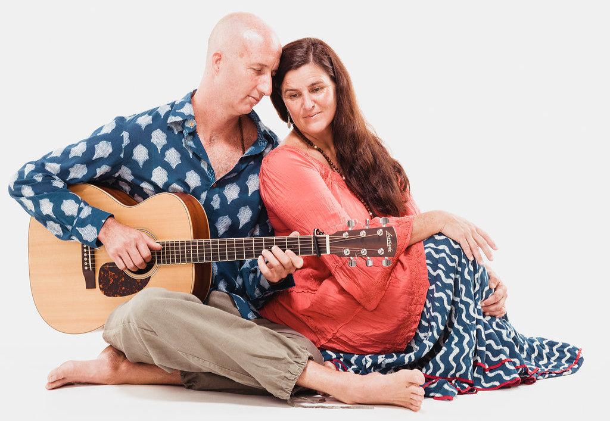
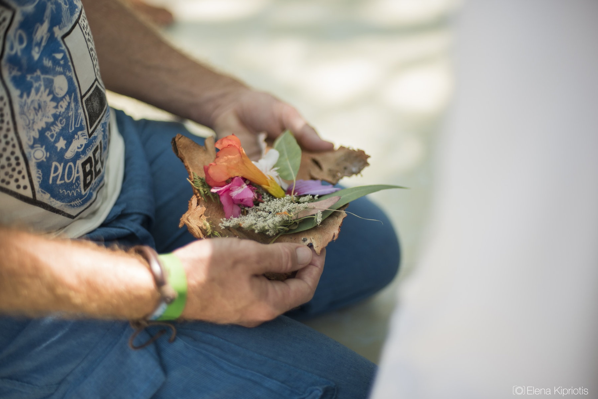

Sacred Earth · 4 Day Retreat
A Journey of Mantra, Meditation & Movement
25 to 28 February 2027
Mana Retreat Centre · Coromandel, New Zealand
The invitation

Join Jethro and Penny for four nourishing days at the breathtaking Mana Retreat Centre, where you'll be gently supported to journey inward and explore the practices, wisdom and way of life that have inspired the music of Sacred Earth.
For four precious days, we step away from the busyness of everyday life and immerse ourselves in nature, music and conscious practice. Through mantra, meditation, movement, dance and Sacred Earth music, we create space to listen inwardly, open the heart and reconnect with the deeper rhythm of life.
This retreat is an invitation to slow down, rejuvenate and reconnect, and to experience the joy of belonging to a heart-centred community of like-minded souls.
Each day
Chant ancient mantras and prayers from the East together, carried by Penny's voice and Jethro's flutes and guitar.
Guided practice to quiet the mind and settle into presence, held within the stillness of the land.
Energising movement practices and free dance to awaken the body and release what you no longer need.
Intention setting and ceremony around the fire, a heartfelt way to mark what you are calling in.
Ample time to rest, walk in the forest, relax in the sauna or book bodywork.
Delicious vegetarian meals, meaningful daily rituals and friendships that blossom naturally.


The sanctuary
Mana Retreat is a sanctuary nestled in the bush-covered hills of the Coromandel Ranges. Its intention is to create an environment of beauty, simplicity and inspiration: a sacred space for all to step into the fullness of their potential.
Mana's natural environment becomes part of the retreat itself. Decades of conscious practice can be felt in the fabric of the land: the forest walks, the stillness, the fresh mountain air and the feeling of being held.
Your retreat
Bodywork is available to book during your free time.

Your guides
Sacred Earth are Australia's internationally acclaimed mantra artists. Penny's soaring vocals and ethereal keyboard melodies meet Jethro's harmonies on shakuhachi, Indian bansuri, Irish whistles and acoustic guitar.
For more than two decades they have shared their music with audiences around the world, guiding thousands of people into profound states of inner peace, presence and connection. Their concerts consistently sell out.
On retreat, they share the meditation, mantra, conscious movement and authentic teachings drawn from their own spiritual journey, creating a welcoming space for deep transformation.
“When we gather in the spirit of peace and share our hearts through sacred music, all distractions fade away; only silence remains. In this sacred silence, we can hear our hearts singing in harmony with all of creation.” Penny & Jethro · Sacred Earth
Reserve your place
25 to 28 February
Mana Retreat Centre · Coromandel, New Zealand
Book your place ⟶Bookings, pricing and accommodation options are handled by Mana Retreat Centre.
25 to 28 February 2027 at Mana Retreat Centre, in the bush-covered hills of the Coromandel Ranges, New Zealand.
Not at all. Penny and Jethro gently guide every practice, so you can come exactly as you are.
Delicious vegetarian meals are part of the retreat.
Bookings are made directly with Mana Retreat Centre. Book here.
We'd love to hear from you. Contact Sacred Earth.
Slow down, rejuvenate and journey into a deeper connection with yourself, each other and the sacred essence of life.
Reserve your place ⟶